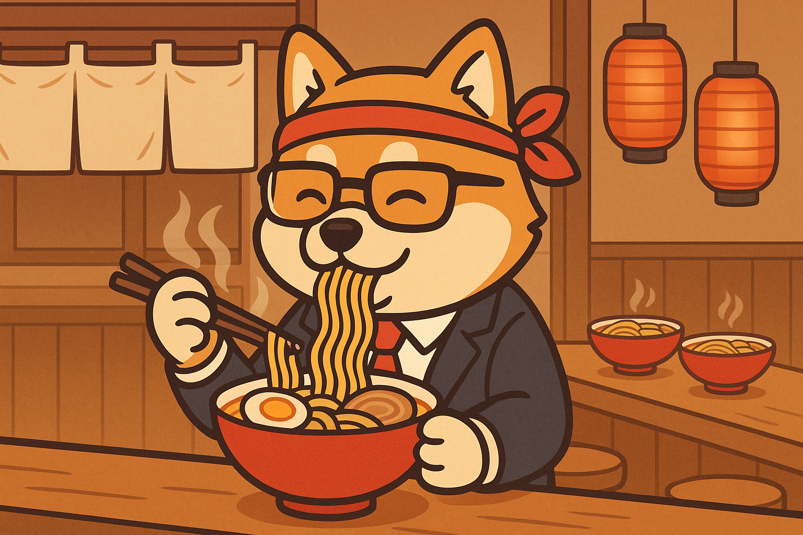
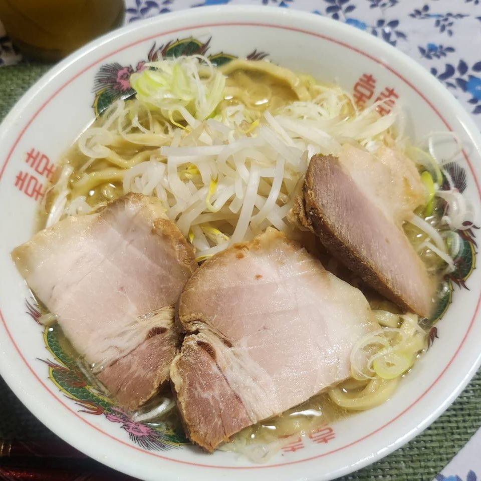
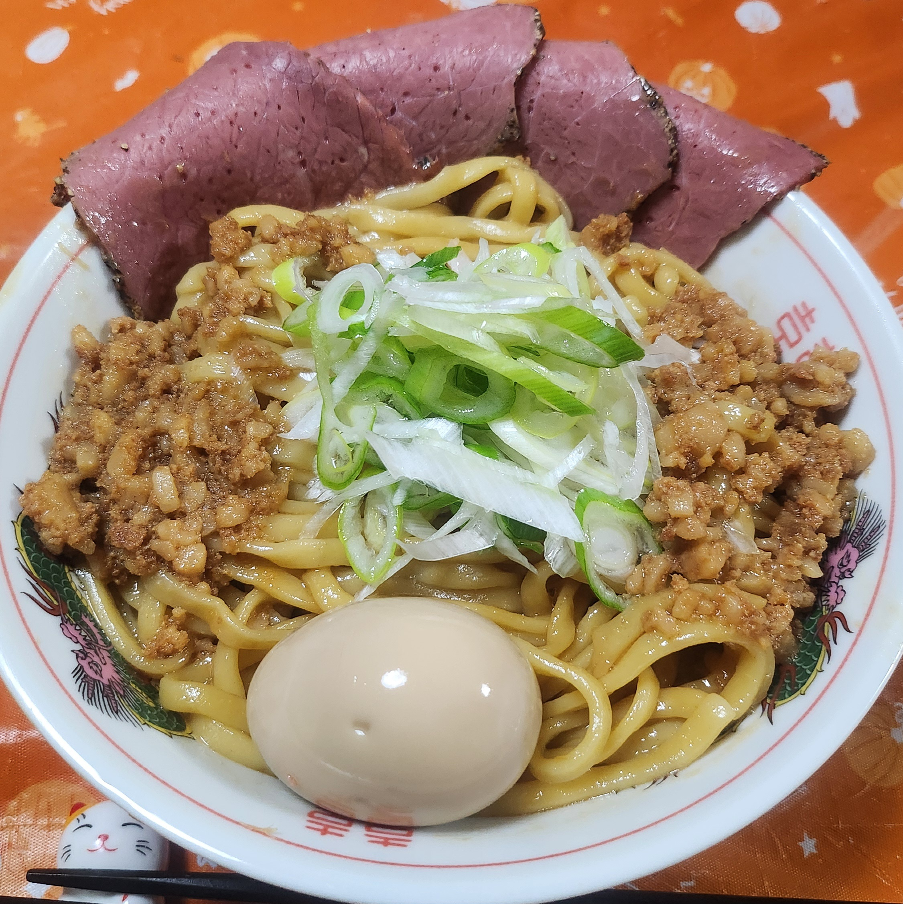
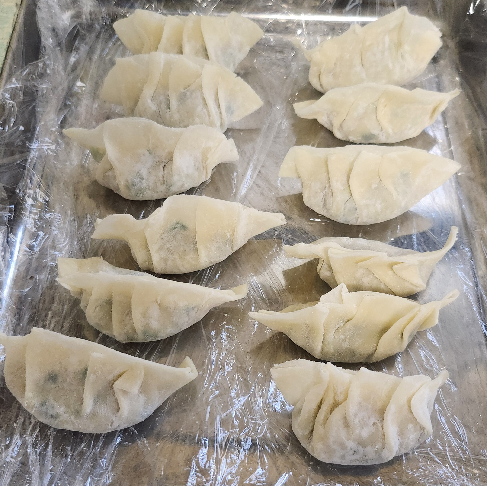
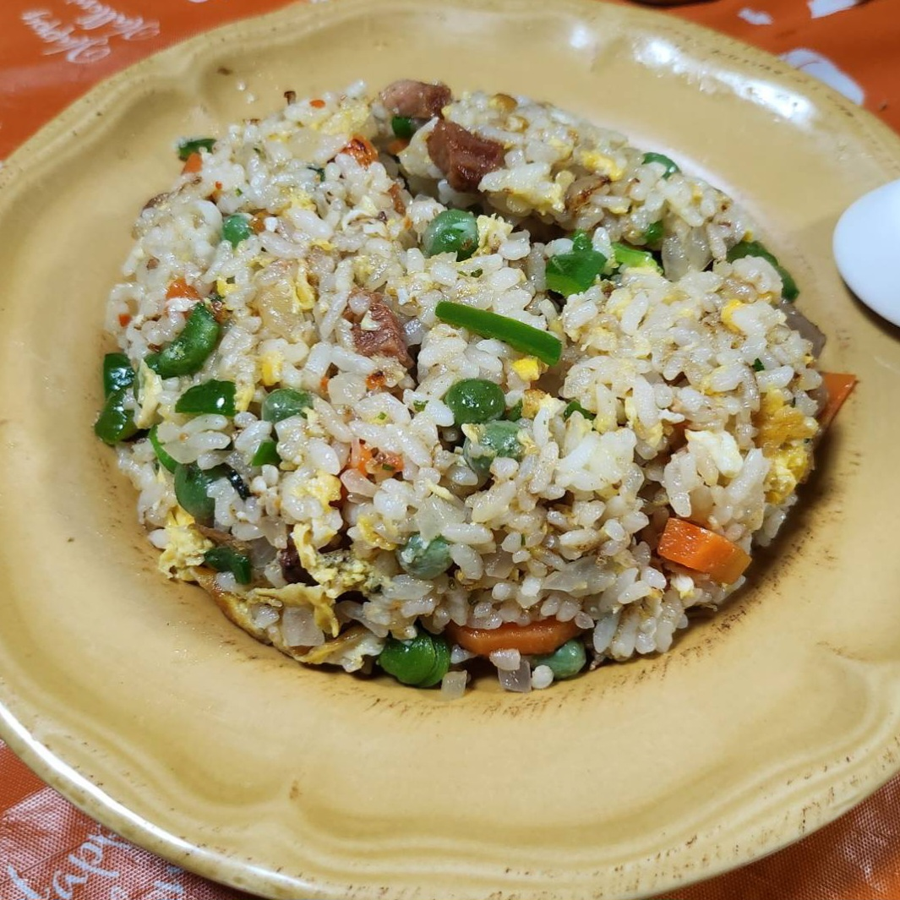

With carefully selected ingredients and a bowl prepared with care,
we bring you a nostalgic flavor. Sign up to receive our latest news and special coupons by email!”

Our Recommendations

A light, salt-based ramen that highlights pure savory flavor

Rich abura soba, packed with the deep taste of pork backfat

Handmade gyoza with juicy fillings wrapped in delicate skins

Our signature fried rice, stir-fried to fragrant perfection
Ramen is fascinating; if you put in the work,
it will always come out delcious. Never forget this.
The Old Master (Tanpopo - 1985)
Ready to taste for yourself?
Come and enjoy the traditional flavors of Jinmenken. We can’t wait to welcome you! Sign up to learn more and get exclusive deals!